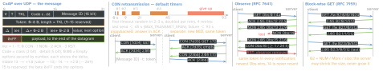
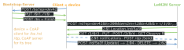
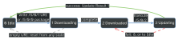

iot · folio
In one line: CoAP (RFC 7252, 2014) is REST over UDP: methods and HTTP-like codes in
a 4-byte binary header, per-message reliability (CON + ACK, back-off), push by
Observe, big bodies block-wise, security by DTLS (per hop) or
OSCORE (end to end). LwM2M (OMA SpecWorks) is device management on CoAP:
a numbered Object / Instance / Resource tree on the device (/3/0/3 = firmware version)
plus bootstrap, registration, management and reporting.
Download PDF Print view LaTeX source


Messages, timers, codes
- CON is resent until an ACK or RST with its Message ID arrives; NON is never ACKed. Empty CON (0.00) → RST = “CoAP ping”. NSTART 1: one open interaction per server.
- Message ID pairs CON with ACK and deduplicates: not reused towards a peer within EXCHANGE_LIFETIME 247 s (216 / 247 s ≈ 265 CON/s per peer); a duplicate gets the same ACK and is processed once. Token (0–8 B, the client’s choice) matches responses and notifications to the request: ≥ 32 random bits on the Internet, or a per-session counter (RFC 9175).
- Multicast: NON only; replies spread over the 5 s leisure. Size: unknown MTU → assume 1280 B: message ≤ 1152 B, payload ≤ 1024 B (802.15.4 frame: 127 B).
- Timers: ACK_TIMEOUT 2 s, ACK_RANDOM_FACTOR 1.5, MAX_RETRANSMIT 4, PROBING_RATE 1 B/s ⇒ MAX_LATENCY 100 s, PROCESSING_DELAY 2 s, MAX_RTT 202 s, NON_LIFETIME 145 s.
| 0.xx | 0.01 GET · 0.02 POST · 0.03 PUT · 0.04 DELETE · 0.05 FETCH · 0.06 PATCH · 0.07 iPATCH |
| 2.xx | 2.01 Created · 2.02 Deleted · 2.03 Valid (ETag) · 2.04 Changed · 2.05 Content · 2.31 Continue |
| 4.xx | 4.00 Bad Request · 4.01 Unauthorized · 4.02 Bad Option · 4.03 Forbidden · 4.04 Not Found · 4.05 Method Not Allowed · 4.06 Not Acceptable · 4.08 Request Entity Incomplete · 4.09 Conflict · 4.12 Precondition Failed · 4.13 Request Entity Too Large · 4.15 Unsupported Content-Format · 4.22 Unprocessable Entity · 4.29 Too Many Requests |
| 5.xx | 5.00 Internal Server Error · 5.01 Not Implemented · 5.02 Bad Gateway · 5.03 Service Unavailable · 5.04 Gateway Timeout · 5.05 Proxying Not Supported · 5.08 Hop Limit Reached |
| 7.xx | TCP / WS only: 7.01 CSM · 7.02 Ping · 7.03 Pong · 7.04 Release · 7.05 Abort |
Options and formats
Odd number = critical: unknown in a CON request → 4.02 Bad Option (even = elective, ignored). Bit 1 set = unsafe for a proxy that does not know it; (n & 0x1e) == 0x1c = not part of the cache key. Max-Age defaults to 60 s.
| 1 | If-Match | 9 | OSCORE | 19 | Q-Block1 | 35 | Proxy-Uri |
| 3 | Uri-Host | 11 | Uri-Path | 20 | Location-Query | 39 | Proxy-Scheme |
| 4 | ETag | 12 | Content-Format | 21 | EDHOC | 60 | Size1 |
| 5 | If-None-Match | 14 | Max-Age | 23 | Block2 | 252 | Echo |
| 6 | Observe | 15 | Uri-Query | 27 | Block1 | 258 | No-Response |
| 7 | Uri-Port | 16 | Hop-Limit | 28 | Size2 | 292 | Request-Tag |
| 8 | Location-Path | 17 | Accept | 31 | Q-Block2 |
Content-Format: 0 text · 40 link-format · 50 JSON · 60 CBOR · 61 CWT · 110 / 112 SenML JSON / CBOR · 10001 OSCORE · 11542–4 LwM2M TLV / JSON / CBOR.
Observe · block-wise · discovery · TCP
Observe (6): GET + Observe 0 registers endpoint + token; notifications are 2.05 on that token with a 24-bit counter; cancel by GET + Observe 1, RST, or forgetting. Eventually consistent: states may be skipped; V2 is newer if 0 < (V2 - V1) mod 224 < 223 or it came > 128 s later. RST or a timed-out CON drops the observer.
Block-wise: Block2 (23) = response body, Block1 (27) = request body; NUM | M | SZX in 1–3 B (NUM 4 / 12 / 20 bit), size 2SZX+4 = 16…1024 B; SZX 7 reserved on UDP, BERT on TCP (n × 1024 B). Atomic upload: 2.31 Continue per block, gap → 4.08, too large → 4.13 + Size1. Request-Tag keeps two bodies apart; Q-Block1/2 (RFC 9177): NON bursts, all gaps re-asked at once (DOTS, lossy links).
Discovery: GET /.well-known/core → link format, e.g. </sensors/temp>;if="sensor": rt type (noun), if interface (verbs), sz max size, ct format; ?rt=temp* filters by prefix. Resource Directory (RFC 9176): POST <rd>?ep=…<=… + links, default lifetime 90 000 s; found via ?rt=core.rd*.
TCP · TLS · WebSockets (RFC 8323): coap+tcp 5683, coaps+tcp 5684 (ALPN coap), coap(s)+ws 80 / 443 at /.well-known/coap; Len + TKL byte, no Type, no MID; 7.01 CSM states the max message size. RFC 8974 tokens (≤ 65 804 B) hold a stateless proxy’s state. vs MQTT (TCP 1883 / 8883, ≥ 2 B header, QoS 0–2): pub / sub via a broker on the device’s own TCP; CoAP has no broker — the device is a server.
Traps
- Matching responses by Message ID — a separate one has a new MID.
- Observe as an event log — it skips states; Send or
hqmaxkeep history. - Idle UDP to a device behind NAT — the mapping may expire after 2 min (RFC 4787 floor, 5 min recommended), silently; DTLS 1.2 without CID then re-handshakes.
- CoAP over TCP has no CON / NON / RST — cancel an Observe with GET Observe 1.
Security — the hop or the message
| DTLS 1.2 RFC 6347 · 1.3 RFC 9147 | OSCORE RFC 8613 (2019) | |
|---|---|---|
| protects | one hop, the whole datagram | end to end: payload + class-E options |
| proxy | ends it, reads everything | forwards; reads Uri-Host, Proxy-Uri, outer Observe |
| keys | PSK, raw public key or X.509 (else NoSec) | Master Secret + IDs → HKDF-SHA-256, or EDHOC |
| must have | PSK and ECDHE-ECDSA, AES-128-CCM-8 | AES-CCM-16-64-128 |
| new address | 1.2 re-handshakes unless CID (RFC 9146); 1.3 has CID | no effect; replay window of 32 |
DTLS 1.3: short header, ACK record, HelloRetryRequest cookie checks the address, timer 1 s doubling. OSCORE’s outer POST → 2.04 (FETCH → 2.05 when observing) hides the method. EDHOC (RFC 9528, 2024): 3 messages of ephemeral DH over COSE → OSCORE keys; option 21 (RFC 9668) adds message_3 to the first OSCORE request. Echo (252) proves freshness and address; until then ≤ 3× amplification.
LwM2M — roles, model, operations

Path /Object/Instance/Resource/Resource-Instance (4th level since 1.1), 16-bit IDs, 65535 reserved: /3303/0/5700 = Temperature, instance 0, Sensor Value. Objects: 0 Security · 1 Server (1 Lifetime = lt) · 2 Access Control · 3 Device (0 Manufacturer, 3 FW Version, 4 Reboot = E) · 4 Connectivity Monitoring · 5 Firmware Update · 6 Location · 9 Software Management · 21 OSCORE · 25 Gateway.
| operation | on CoAP |
|---|---|
| Read · Discover · Write | GET · GET Accept 40 · PUT replaces, POST updates part |
| Write-Attributes | PUT /3303/0/5700?pmin=10&pmax=60>=30 |
| Execute · Create · Delete | POST /3/0/4 · POST /3303 · DELETE /3303/1 |
| Composite (1.1) | Read = FETCH (a GET with a body), Write = iPATCH; body = paths (+ values) |
Attributes (Write-Attributes; in the Observe since 1.2): pmin / pmax = min / max seconds between notifications; gt / lt / st = threshold / step, held back by pmin; epmin / epmax = evaluation periods; 1.2: edge, con (CON notifications), hqmax (history kept offline). Bindings b=: U UDP (default) · T TCP · S SMS · N Non-IP (3GPP CIoT, LoRaWAN) · M MQTT · H HTTP (M, H since 1.2). Queue mode (Q): the server holds requests until the sleeping device speaks; it should stay up ≥ MAX_TRANSMIT_WAIT (93 s) after its last message. Security Mode /0/x/2: 0 PSK · 1 RPK · 2 Certificate · 3 NoSec · 4 Certificate + EST; DTLS 1.2 mandatory, (D)TLS 1.3 + CID optional (1.2). Formats: MUST plain text, opaque, CoRE link; SHOULD SenML or LwM2M CBOR.
Firmware update — Object 5

Update Result: 2 no flash · 3 no RAM · 4 link lost · 5 integrity (→ Idle) · 6 package type · 7 URI · 9 protocol · 10 cancelled · 11 deferred.
Versions
LwM2M 1.1 (Jul 2018): TCP / TLS, OSCORE, LPWAN, Resource Instances, composite, SenML, Send. 1.2 (Nov 2020): MQTT + HTTP, Bootstrap-Pack, Gateway, LwM2M CBOR, edge / con / hqmax, (D)TLS 1.3. Latest approved 1.2.2 (13 Jun 2024); no 2.0 in OMA’s release directory on 9 Oct 2026. Leshan (Java): 1.x = LwM2M 1.0, 2.0.0-M18 (Dec 2025) = 1.1; Wakaama (C): repository archived 15 Sep 2026.